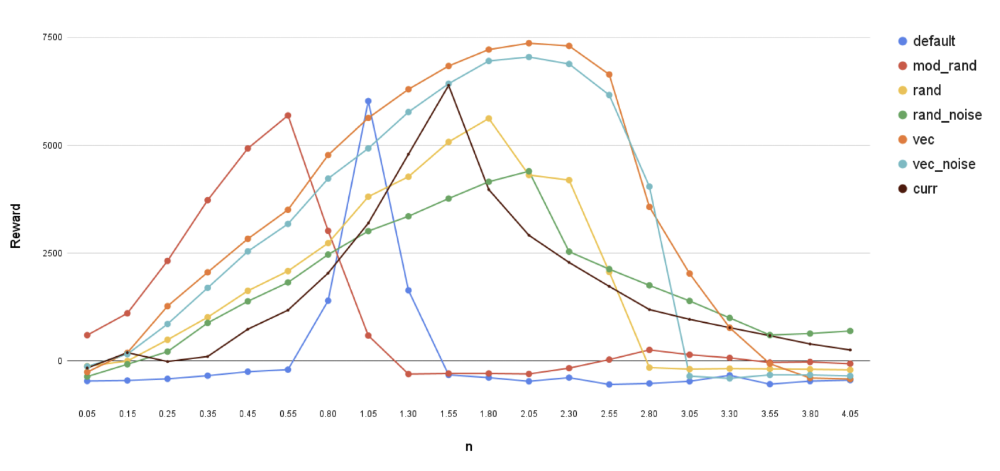

Morphology HalfCheetah Locomotion
SAC · MuJoCo · domain randomization · morphology‑aware input
OVERVIEW
This project explores how reinforcement learning agents can adapt to changing body dynamics and environments. We extend the MuJoCo HalfCheetah by randomizing leg lengths and ground friction, then train Soft Actor‑Critic (SAC) policies under different setups. Our focus is on enabling zero‑shot generalization—the ability to perform robustly on unseen morphologies and friction levels—by comparing domain randomization, noise injection, and morphology‑aware observations.
MUJOCO BASE ENVIRONMENT
- Base: Gym MuJoCo HalfCheetah
- Leg segment defaults (m): back thigh 0.145, back shin 0.150, front thigh 0.133, front shin 0.106
- Friction coefficient default: 0.4
- Action repeat / frame‑skip: 5; Gym‑compatible API with dynamic XML rebuild per episode
- Randomization ranges: Legs (× default): 0.25–2.5; friction: 0.05–0.6
RL SETUP: ACTION & OBSERVATION
- Algorithm: Soft Actor‑Critic (SAC) for continuous control.
- Action space: 6‑D torques in [−1, 1] for actuated joints.
- Observation (18‑D): 9 positions + 9 velocities.
- Extended observation (morphology‑aware): Append leg lengths to the state vector.
- noise: Gaussian observation noise σ = 0.01 for robustness tests.
EXPERIMENT VARIANTS
- Baseline: fixed default morphology; no noise.
- Moderate Morphology: 0.5–1.5× leg lengths, updated every 20 episodes.
- Morphology: 0.25–2.5× leg lengths, updated every 20 episodes.
- Morphology + Noise: as (3) with observation noise.
- Morphology Vector Input: per‑episode randomization with leg lengths fed into observations.
- Vector + Noise: as (5) with observation noise.
- Curriculum: 4 stages increasing randomness over 3000 episodes.
TRAINING SETUP
| Component | Setting |
|---|---|
| Actor/Critic | 2 layers, 256 units, ReLU |
| Optimizer | Adam, 3×10⁻⁴ |
| Discount factor γ | 0.99 |
| Batch size | 256 |
| Replay buffer size | 10⁶ samples |
| Soft update τ | 0.005 |
| Exploration steps | 10k random steps |
| Noise | Gaussian, σ = 0.01 (selected runs) |
| Random seed | 0 |
VALIDATION SETUP
| Component | Setting |
|---|---|
| Friction coefficient | Fixed 0.2 |
| Morphology sweep | 0.05× → 4.05× in steps |
| Observation noise | σ = 0.01 |
RESULTS

ANALYSIS & DISCUSSION
- Comparing default, mod_rand, and rand, we observe that introducing randomized morphology during training enhances generalization capability.
- Comparing rand and rand_noise, we find that injecting noise marginally improves robustness, albeit at the expense of overall performance.
- Comparing vec and vec_noise, we observe that injecting noise into the morphology input slightly decreases robustness.
- Although Curriculum training outperforms other randomized training methods, it still underperforms compared to approaches that incorporate morphology input.
CONCLUSION
- Randomizing morphology improves generalization to unseen configurations.
- Encoding morphology in the observation provides the strongest robustness.
- Noise and perturbations add robustness but may reduce performance.
- Curriculum learning helps but is less effective than morphology-aware input.